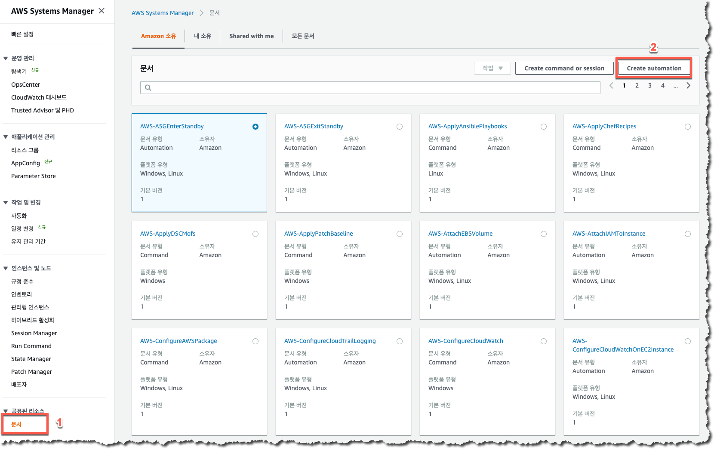
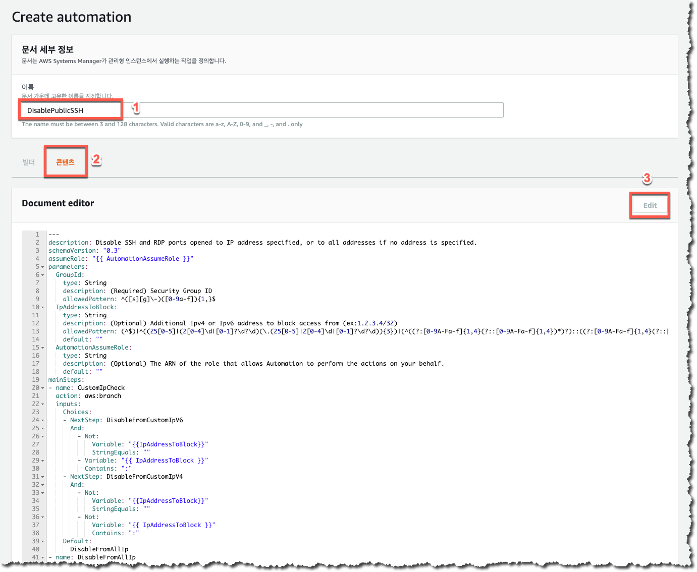
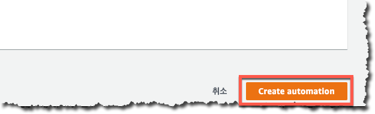

AWS Config 규칙에 사용될 문제 해결 작업은 AWS Systems Manager Automation을 사용하여 실행됩니다. 따라서, 여러분들은 AWS 에서 관리형으로 제공하는 AWS 소유의 Automation 을 사용하거나 여러분들이 직접 작성하신 Automation 을 이용하여 “문제 해결” 을 하실 수 있습니다. 이 과정에서는 EC2 인스턴스에 적용되어 있는 Security Group 의 0.0.0.0/0 Port 22 허용 정책을 탐지 후 제거하는 Automation 을 신규로 생성하도록 하겠습니다.
1.문제해결에 사용할 SSM Document 를 위해 AWS Systems Manager Document 를 클릭한 뒤 ““Create Automation” 버튼을 클릭하여 아래이 순서대로 새로운 Automation 을 생성합니다.

2.이름에 “DisablePublicSSH” 를 입력한 후 아래의 메뉴에서 “컨텐츠” 를 클릭합니다. 이후에 Automation 에 사용할 코드를 직접 입력하기 위하여 우측의 “Edit” 버튼을 클릭한 후 아래의 코드를 복사하여 붙여넣습니다. 
---
description: Disable SSH and RDP ports opened to IP address specified, or to all addresses if no address is specified.
schemaVersion: "0.3"
assumeRole: "{{ AutomationAssumeRole }}"
parameters:
GroupId:
type: String
description: (Required) Security Group ID
allowedPattern: ^([s][g]\-)([0-9a-f]){1,}$
IpAddressToBlock:
type: String
description: (Optional) Additional Ipv4 or Ipv6 address to block access from (ex:1.2.3.4/32)
allowedPattern: (^$)|^((25[0-5]|(2[0-4]\d|[0-1]?\d?\d)(\.(25[0-5]|2[0-4]\d|[0-1]?\d?\d)){3})|(^((?:[0-9A-Fa-f]{1,4}(?::[0-9A-Fa-f]{1,4})*)?)::((?:[0-9A-Fa-f]{1,4}(?::[0-9A-Fa-f]{1,4})*)?))|(^(?:[0-9a-fA-F]{1,4}:){7}[0-9a-fA-F]{1,4}))\/(25[0-5]|2[0-4]\d|[0-1]?\d?\d)$
default: ""
AutomationAssumeRole:
type: String
description: (Optional) The ARN of the role that allows Automation to perform the actions on your behalf.
default: ""
mainSteps:
- name: CustomIpCheck
action: aws:branch
inputs:
Choices:
- NextStep: DisableFromCustomIpV6
And:
- Not:
Variable: "{{IpAddressToBlock}}"
StringEquals: ""
- Variable: "{{ IpAddressToBlock }}"
Contains: ":"
- NextStep: DisableFromCustomIpV4
And:
- Not:
Variable: "{{IpAddressToBlock}}"
StringEquals: ""
- Not:
Variable: "{{ IpAddressToBlock }}"
Contains: ":"
Default:
DisableFromAllIp
- name: DisableFromAllIp
action: aws:executeAwsApi
inputs:
Service: ec2
Api: RevokeSecurityGroupIngress
GroupId: "{{GroupId}}"
IpPermissions: [
{"IpProtocol": "tcp", "FromPort": 22, "ToPort": 22,
"IpRanges": [{"CidrIp": "0.0.0.0/0"}]},
{"IpProtocol": "tcp", "FromPort": 22, "ToPort": 22,
"Ipv6Ranges": [{"CidrIpv6": "::/0"}]}
]
isEnd: true
- name: DisableFromCustomIpV4
action: aws:executeAwsApi
inputs:
Service: ec2
Api: RevokeSecurityGroupIngress
GroupId: "{{GroupId}}"
IpPermissions: [
{"IpProtocol": "tcp", "FromPort": 22, "ToPort": 22,
"IpRanges": [{"CidrIp": "{{ IpAddressToBlock }}"}]}
]
isEnd: true
- name: DisableFromCustomIpV6
action: aws:executeAwsApi
inputs:
Service: ec2
Api: RevokeSecurityGroupIngress
GroupId: "{{GroupId}}"
IpPermissions: [
{"IpProtocol": "tcp", "FromPort": 22, "ToPort": 22,
"Ipv6Ranges": [{"CidrIpv6": "{{ IpAddressToBlock }}"}]}
]
isEnd: true
3.화면 하단의 “Create Automation” 을 클릭하여 새로운 Automation 의 생성을 완료합니다. 